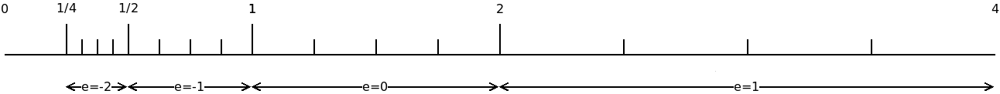
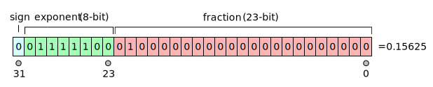

- Una grandezza (fisica o astratta) può essere rappresentata in due forme
- Analogica: insieme di valori continuo (denso e “senza buchi”)
- Digitale (o numerica): insieme di valori discreto (tutti i punti sono isolati)
Introduzione all'informatica
Michele Tomaiuolo
Ingegneria dell'Informazione, UniPR
Analogico e digitale
Approssimazione discreta
- Alcune informazioni sono intrinsecamente discrete
- Informazioni “artificiali”, es. un testo scritto
- Scala atomica o subatomica …
- Molte grandezze fisiche hanno forma continua
- Per loro elaborazione al calcolatore: rappresentazione digitale
- Approssimazione del valore analogico
- Errore dipende dalla precisione della rappresentazione digitale scelta
Codice
- Sistema basato su simboli, che permette la rappresentazione dell’informazione
- Simbolo: elemento atomico
- Alfabeto: insieme dei simboli possibili (
A) - Cardinalità del codice: numero di simboli dell’alfabeto
- Stringa: sequenza di simboli (
s ∈ A*) - Linguaggio: insieme stringhe ben formate (
L ⊆ A*)
Codice posizionale

- Un numero naturale può essere rappresentato con una notazione posizionale
N = c0 · base0 + c1 · base1 + … + cn · basen- Es.
58710 = 7·100 + 8·101 + 5·102
- Es.
- Sistemi di numerazione posizionali di uso comune
- Decimale (base 10; c:
0-9) - Binario (base 2; c:
0-1) - Esadecimale (base 16; c:
0-9, A-F)
- Decimale (base 10; c:
Codifica dell’informazione
- Codifica: regole di corrispondenza per passare da un certo codice ad un altro
- Corrispondenza biunivoca
- Tra una stringa di un codice
- E una stringa di un altro codice
- Ad una certa stringa in un alfabeto ricco di simboli, corrisponde una stringa più lunga in un alfabeto più ridotto
Numeri binari
Codice binario
- Base 2; c:
0-1 - Informazione digitale nei calcolatori rappresentata con una sequenza di 0 e 1
- Sistema ideato da Leibniz, ~1700
- Calcolatore progr. Zuse, ~1940
- Ogni elemento di una sequenza binaria viene detto bit
- Una sequenza di 8 bit viene detta byte
Codifica decimale → binaria
- (1) Dividere il numero decimale per 2
- (2) Il resto è il valore del nuovo bit, a sinistra
- (3) Il quoziente è il numero con cui continuare (loop)
- Ossia continuare a dividere per 2 il quoziente, finché non si annulla
- Es.:
3510 = 001000112
| n | n // B | n % B | peso |
|---|---|---|---|
| 35 | 17 | 1 | 1 = 20 |
| 17 | 8 | 1 | 2 = 21 |
| 8 | 4 | 0 | 4 = 22 |
| 4 | 2 | 0 | 8 = 23 |
| 2 | 1 | 0 | 16 = 24 |
| 1 | 0 | 1 | 32 = 25 |
Numeri naturali
- Rappresentare un numero naturale
Nin forma binaria - Occorrono
Kbit, t.c.2K > N - Es. 4 bit per numeri naturali da 0 a 15
- Un calcolatore assegna un numero fisso di bit per diversi tipi di informazione
- Casi di valori non rappresentabili
- Overflow, underflow
Esadecimale (Hex)
| Dec | Bin | Hex | Dec | Bin | Hex | Dec | Bin | Hex |
|---|---|---|---|---|---|---|---|---|
| 00 | 0000 0000 | 00 | 16 | 0001 0000 | 10 | 32 | 0010 0000 | 20 |
| 01 | 0000 0001 | 01 | 17 | 0001 0001 | 11 | 33 | 0010 0001 | 21 |
| 02 | 0000 0010 | 02 | 18 | 0001 0010 | 12 | 34 | 0010 0010 | 22 |
| 03 | 0000 0011 | 03 | 19 | 0001 0011 | 13 | 35 | 0010 0011 | 23 |
| 04 | 0000 0100 | 04 | 20 | 0001 0100 | 14 | 36 | 0010 0100 | 24 |
| 05 | 0000 0101 | 05 | 21 | 0001 0101 | 15 | 37 | 0010 0101 | 25 |
| 06 | 0000 0110 | 06 | 22 | 0001 0110 | 16 | 38 | 0010 0110 | 26 |
| 07 | 0000 0111 | 07 | 23 | 0001 0111 | 17 | 39 | 0010 0111 | 27 |
| 08 | 0000 1000 | 08 | 24 | 0001 1000 | 18 | 40 | 0010 1000 | 28 |
| 09 | 0000 1001 | 09 | 25 | 0001 1001 | 19 | 41 | 0010 1001 | 29 |
| 10 | 0000 1010 | 0A | 26 | 0001 1010 | 1A | 42 | 0010 1010 | 2A |
| 11 | 0000 1011 | 0B | 27 | 0001 1011 | 1B | 43 | 0010 1011 | 2B |
| 12 | 0000 1100 | 0C | 28 | 0001 1100 | 1C | 44 | 0010 1100 | 2C |
| 13 | 0000 1101 | 0D | 29 | 0001 1101 | 1D | 45 | 0010 1101 | 2D |
| 14 | 0000 1110 | 0E | 30 | 0001 1110 | 1E | 46 | 0010 1110 | 2E |
| 15 | 0000 1111 | 0F | 31 | 0001 1111 | 1F | 47 | 0010 1111 | 2F |
Bin ↔ Hex
- Ogni gruppo di 4 bit: 16 configurazioni diverse
- Disposizioni con ripetizione:
24 = 16
- Disposizioni con ripetizione:
- Ciascuna configurazione corrisponde ad uno dei 16 simboli esadecimali
Somma e sottrazione
1 1
0 0 0 1 0 1 1 0 +
0 0 0 1 0 1 0 1 =
-----------------
0 0 1 0 1 0 1 1
0 10
0 0 0 0 1 1 1 0 -
0 0 0 0 0 1 0 1 =
-----------------
0 0 0 0 1 0 0 1
Attenzione a riporto e prestito (in alto)
Moltiplicazione
1 0 1 1 x
1 1 0 1 =
---------
1 0 1 1 +
0 0 0 0
-------------
0 1 0 1 1 +
1 0 1 1
---------------
1 1 0 1 1 1 +
1 0 1 1
-----------------
1 0 0 0 1 1 1 1
Divisione
1 0 1 1 0 1 : 1 1
0 0 ---------
----- 0 1 1 1 1
1 0 1 -
1 1
-------
1 0 1 -
1 1
-------
1 0 0 -
1 1
-------
1 1 -
1 1
-----
0 0
Numeri interi
- Occorre rappresentare anche i numeri negativi
- Necessario riservare un bit per il segno
- Ovvero, si dimezza il massimo modulo ammesso
- Modulo e segno
- Il primo bit indica il segno
- 0 positivo, 1 negativo
Complemento a due
- Rappresentazione alternativa, diversa da modulo e segno!
- Numero negativo, ottenuto dal suo opposto positivo
- Complemento il numero
(gli 1 diventano 0 e viceversa) - Sommo 1
- Complemento il numero
- Anche così, il primo bit indica il segno
- 0 positivo, 1 negativo
- Attenzione: bisogna conoscere codifica e num bit
- Esempi seguenti: ogni intero con segno memorizzato in un singolo byte
Es. numero intero
- Avendo un byte, +35 è in binario:
00100011 - Numero –35, in modulo e segno:
10100011 - Numero –35, in complemento a due:
11011101
0 0 1 0 0 0 1 1 ¬
-----------------
1 1 0 1 1 1 0 0 +
1 =
-----------------
1 1 0 1 1 1 0 1
¬: complemento semplice, bit a bit
Somma con segno
- Sommare 12 e -35 su 8 bit, modulo e segno
- Sottrazione tra 35 e 12
- Cambio di segno
- Stessa operazione, complemento a due
- Semplice somma:
12 + -35 = -23
- Semplice somma:
0 0 0 0 1 1 0 0 +
1 1 0 1 1 1 0 1 =
-----------------
1 1 1 0 1 0 0 1
Numeri reali
- Insieme continuo, per grandezze analogiche
- Rappresentabili solo in modo approssimato
- Parte frazionaria:
F = c-1 · base-1 + … + c-n · base-n
- Due rappresentazioni alternative
- Virgola fissa: segno, parte intera, parte decimale
- Virgola mobile: segno, mantissa, esponente
Parte frazionaria in binario
- (1) Moltiplicare la parte frazionaria per 2
- (2) Assegnare la parte intera del risultato come valore del bit (loop)
- Ossia: continuare a moltiplicare per 2 la parte frazionaria del risultato...
finché non si annulla
| fract | fract*B | int | peso |
|---|---|---|---|
| 0,375 | 0,750 | 0 | 2-1 |
| 0,750 | 1,500 | 1 | 2-2 |
| 0,500 | 1,000 | 1 | 2-3 |
Virgola fissa
- Numero espresso come:
r = (i, f)iè la parte intera,n1bitfè la parte frazionaria,n2bit
- Precisione costante lungo l’asse reale
- P.es.
fdi 3 bit, valori consecutivi sempre distanziati di 1/8 - Tra ciascun intero e il successivo, possiamo rappresentare 8 valori
- P.es.
Virgola mobile
- Numero espresso come:
r = ±(1+f)·2eeè l'esponente intero (o caratteristica),n1bitfè la parte frazionaria (0 ≤ f < 1),n2bit2è la base,1+fè anche detto mantissa
- Precisione variabile lungo l’asse reale; p.es.:
f ∈ {0, 1/4, 2/4, 3/4}, 2 bit
e ∈ {-2, -1, 0, 1}, 2 bit

http://www.mathworks.com/company/newsletters/news_notes/pdf/Fall96Cleve.pdf
IEEE 754 single & double
- Precisione singola: 32 bit
- 1 x segno, 8 x esponente, 23 x frazione
- Precisione doppia: 64 bit
- 1 x segno, 11 x esponente, 52 x frazione

https://www.wikihow.com/Convert-a-Number-from-Decimal-to-IEEE-754-Floating-Point-Representation
IEEE 754 half-precision
- Rappresentazione usata nelle GPU, per velocizzare i calcoli
-118.625 = -1110110.1012 = -1.1101101012 × 26- All’esponente, su 5 bit, bisogna sommare
15(=2(5 − 1) − 1)
Algebra di Boole
Algebra di Boole
- L’algebra di Boole è un formalismo che opera su variabili (dette variabili booleane)
- Le variabili booleane possono assumere due soli valori:
vero,falso - Sulle variabili booleane è possibile definire delle funzioni (dette funzioni booleane)
- Anche le funzioni booleane possono assumere solo i due valori
veroefalso
Funzione e tabella di verità
- Una tabella di verità permette di definire una funzione booleana
- Valore risultante per ciascuna configurazione dei valori in ingresso
- A volte, specifica incompleta (certe configurazioni di ingressi non possono verificarsi) → Non è specificato alcun valore
| A | B | C | F1 |
|---|---|---|---|
| 0 | 0 | 0 | 1 |
| 0 | 0 | 1 | 0 |
| 0 | 1 | 0 | 0 |
| 0 | 1 | 1 | 1 |
| 1 | 0 | 0 | 0 |
| 1 | 0 | 1 | 1 |
| 1 | 1 | 0 | 1 |
| 1 | 1 | 1 | 1 |
Operatori di base
- Algebra di Boole: basata su un insieme di operatori
- Semplici funzioni, specificate con tabelle di verità
| A | B | A·B | A+B | A⊕B | A↑B | A↓B |
|---|---|---|---|---|---|---|
| 0 | 0 | 0 | 0 | 0 | 1 | 1 |
| 0 | 1 | 0 | 1 | 1 | 1 | 0 |
| 1 | 0 | 0 | 1 | 1 | 1 | 0 |
| 1 | 1 | 1 | 1 | 0 | 0 | 0 |
| A | ¬A |
|---|---|
| 0 | 1 |
| 1 | 0 |
Espressione booleana

- Operatori possono essere combinati in espressioni
- Altra forma di definizione di funzioni booleane
- Es.
F2(A, B, C) = A·B + C
| Operatore | Simbolo |
|---|---|
| And | · (∧) |
| Or | + (∨) |
| Not | ¬ |
| Xor | ⊕ |
| Nand | ↑ |
| Nor | ↓ |
Proprietà degli operatori
| Proprietà | Not |
|---|---|
| Complemento | ¬¬A = A |
| Proprietà | And | Or |
|---|---|---|
| Commutativa | A · B = B · A | A + B = B + A |
| Associativa | (A·B) · C = A · (B·C) | (A+B) + C = A + (B+C) |
| Distributiva | A + (B·C) = (A+B) · (A+C) | A · (B+C) = (A·B) + (A·C) |
| Idempotenza | A · A = A | A + A = A |
| Identità | A · 1 = A | A + 0 = A |
| Del limite | A · 0 = 0 | A + 1 = 1 |
| Assorbimento | A · (A + B) = A | A + (A · B) = A |
| Inverso | A · ¬ A = 0 | A + ¬A = 1 |
| De Morgan | ¬(A·B·C…) = ¬A + ¬B + ¬C… | ¬(A+B+C…) = ¬A · ¬B · ¬C… |
Attenzione a De Morgan: errore comune!
De Morgan
if x1 == x2 and y1 == y2:
print("the points are equal")
if x1 != x2 or y1 != y2: # not (x1 == x2 and y1 == y2)
print("the points are different")
- Python permette di confrontare tuple
pt1 = x1, y1
pt2 = x2, y2
if pt1 != pt2:
print("the points are different")
Forme canoniche
- Somma di Prodotti (SP): si considerano le righe a 1
F1(A, B, C) = (¬A·¬B·¬C) + (¬A·B·C) + (A·¬B·C) + (A·B·¬C) + (A·B·C)
- Prodotto di Somme (PS): si considerano le righe a 0, negate
F1(A, B, C) = (A + B + ¬C) · (A + ¬B + C) · (¬A + B + C)
| A | B | C | F1 | → Forma canonica... |
|---|---|---|---|---|
| 0 | 0 | 0 | 1 | → SP |
| 0 | 0 | 1 | 0 | → PS |
| 0 | 1 | 0 | 0 | → PS |
| 0 | 1 | 1 | 1 | → SP |
| 1 | 0 | 0 | 0 | → PS |
| 1 | 0 | 1 | 1 | → SP |
| 1 | 1 | 0 | 1 | → SP |
| 1 | 1 | 1 | 1 | → SP |
Cenni di logica
Proposizione
- Frase dichiarativa di senso compiuto che possa esser riconosciuta come “vera” o “falsa”
- Principio di non contraddizione: un enunciato non può essere contemporaneamente vero e falso
- Principio del terzo escluso: un enunciato è vero o falso, non esiste una terza possibilità (tertium non datur)
- Ad esempio, sono proposizioni:
- “Il cane è un animale” - “2 = 1” - “I triangoli hanno tre lati”
- ... Mentre non lo sono:
- “Il cane” - “Che ore sono?” - “Se 2 = 1” - “Non fumare!” - “Io sono bugiardo” (*)
(*) Paradosso: non si può stabilire se la frase è vera o falsa
Tarsia @ UniPI: http://people.dm.unipi.it/tarsia/dida1011/logins05.pdf
Connettivi logici
- Gli operatori booleani si usano anche con le proposizioni
- “e” (congiunzione, ∧)
- “o” (disgiunzione, ∨)
- “non” (negazione, ¬)
- Valgono le proprietà già viste
- In logica, chiamati connettivi
- Servono a legare proposizioni in forma più complessa
Connettivo condizionale o implicazione logica
- Esprime il legame “se” ... “allora”
- P: “io penso” (premessa)
- Q: “io esisto” (conseguenza)
- P ⇒ Q: “se penso allora esisto”
- P ⇒ Q si può leggere nei seguenti modi:
- Se P allora Q
- Da P segue Q
- P è condizione sufficiente per Q (se P è vera, allora Q è vera)
- Q è condizione necessaria per P (se Q è falsa, allora P è falsa)
Verità dell'implicazione
- P ⇒ Q è falsa solo in un caso: quando P è vera e Q è falsa
- ¬(P ⇒ Q) = (P ∧ ¬Q)
- Ne consegue che P ⇒ Q è vera se P è falsa o Q è vera
- P ⇒ Q = ¬(P ∧ ¬Q) = [De Morgan]
¬P ∨ ¬(¬Q) = [Doppia negazione]
¬P ∨ Q
- P ⇒ Q = ¬(P ∧ ¬Q) = [De Morgan]
- Esempi di implicazioni vere:
- “Se 5 è un numero allora Roma è una città”
- “Se Parigi è la capitale d'Italia, allora 5 + 5 = 10”
- L'mplicazione non soddisfa la proprietà commutativa:
- (P ⇒ Q) ≠ (Q ⇒ P)
Doppia implicazione
- P ⇔ Q: valgono contemporaneamente le implicazioni P ⇒ Q e Q ⇒ P
- P ⇔ Q è vera quando P e Q sono entrambe vere o entrambe false
- Applichiamo proprietà distributiva e proprietà dell'inverso
- (P ⇒ Q) ∧ (Q ⇒ P) =
(¬P ∨ Q) ∧ (¬Q ∨ P) =
((¬P) ∧ (¬Q ∨ P)) ∨ (Q ∧ ((¬Q) ∧ P)) =
((¬P) ∧ ¬Q) ∨ (¬P ∧ P) ∨ ((P ∧ Q) ∨ (¬Q ∧ Q)) =
(P ∧ Q) ∨ (¬P ∧ ¬Q)
Deduzione logica
- Un teorema si riconduce all’implicazione P ⇒ Q
- P (ipotesi): proposizione che si assume vera
- Q (tesi): proposizione di cui si vuole dedurre la verità
- Processo di deduzione logica, o dimostrazione, deve seguire ben precise regole di inferenza
- Dimostrazione diretta (modus ponens)
- Dimostrazione per assurdo (modus tollens)
Dimostrazione diretta, modus ponens
- Schema di ragionamento
| Premessa | Conseguenza |
|---|---|
| (P ⇒ Q) vera P vera |
Q vera |
- Esempio
- Se c'è sole, Ugo arriva in bici (implicazione)
- C'è sole (fatto)
- Ugo arriva in bici (deduzione)
- Alla base dei sillogismi aristotelici (con quantificatori)
- Premessa maggiore: “Tutti gli uomini sono mortali”
- Premessa minore: “Socrate è un uomo”
- Conclusione: “Socrate è mortale”
Osservazioni sul modus ponens
- Il solo fatto di sapere che P ⇒ Q è vera non consente di concludere niente su P e Q
- Sono possibili dimostrazioni con più passaggi intermedi
- Se sono vere le implicazioni P ⇒ R, R ⇒ Q e se P è vera, allora è vera anche Q
- ((P ⇒ R) ∧ (R ⇒ Q) ∧ P) ⇒ Q
- Schema di ragionamento
| Premessa | Conseguenza |
|---|---|
| (P ⇒ R) vera (R ⇒ Q) vera P vera |
Q vera |
Dimostrazione per assurdo, modus tollens
- Se è vera l’implicazione ¬Q ⇒ ¬P ed è vera P, allora è vera anche Q
- Schema di ragionamento
| Premessa | Conseguenza |
|---|---|
| (¬Q ⇒ ¬P) vera P vera |
Q vera |
- Esempio di teorema
- P: m·n ≠ 0
- Q: (m ≠ 0) ∧ (n ≠ 0)
- Dimostrazione per assurdo: ¬Q ⇒ ¬P
- Se (m = 0) oppure (n = 0), allora m·n = 0
Predicato, o enunciato aperto
- Frase che contiene variabili
- La verità della frase dipende dal valore delle variabili
- Se variabili sostituite da valori, diventa proposizione
- Esempio
- P(x): “x è un numero dispari”
- Occorre definire il dominio delle variabili
- Insieme di verità del predicato
- Valori delle variabili che rendono vero l'enunciato
- Sottoinsieme del dominio delle variabili
Predicati con connettivi
- P(x) ∧ Q(x) -- Vero per gli x che rendono veri entrambi i pred.
- P(x) ∨ Q(x) -- Vero per gli x che rendono vero almeno un pred.
- ¬P(x) -- Vero per gli x che rendono falso il pred.
- P(x) ⇒ Q(x) -- Vero per gli x che rendono falso P oppure vero Q
- P(x) ⇔ Q(x) -- Vero per gli x che rendono i pred. entrambi falsi o entrambi veri
Quantificatori
- Un predicato può essere trasformato in una proposizione in due modi
- Sostituendo la variabili con valori
- Quantificando le sue variabili
- Una variabile legata ad un quantificatore si dice vincolata, altrimenti libera
- I quantificatori logici sono due
- Quantificatore universale
- Quantificatore esistenziale
Quantificatore universale
- Una data proprietà vale per tutti i valori possibili delle variabili
∀x, P(x)-- “Per ogni x, P(x) è vero”- Esempi
- ∀n ∈ N, n è multiplo di 4 ⇒ n è pari
- ∀x ∈ R ∀y ∈ R, (x + y)2 = x2 + 2xy + y2
Quantificatore esistenziale
- Una data proprietà vale per almeno un valore delle variabili
∃x : P(x)-- “Esiste almeno un x tale che P(x) è vero”- Esempi
- ∃n ∈ N: n è pari -- Esiste almeno un numero pari
- ∃x ∈ R: 2x + 1 = 0 -- L'equazione ammette almeno una soluzione
- Enunciati con ∄ riformulati con ∀ e negando il predicato
- ∄x : x2 < 0
- ∀x, x2 ≥ 0
Proprietà dei quantificatori
- I quantificatori sono sostanzialmente congiunzioni o disgiunzioni allargate a tutti gli elementi di un insieme
- Due quantificatori dello stesso tipo possono essere scambiati di posto senza alterare la verità dell’enunciato
- Invece, due quantificatori di diverso tipo non possono essere scambiati di posto
- I seguenti enunciati sono ben diversi
- ∀x, ∃y : y ≥ x
- ∃y : ∀x, y ≥ x
Negazione con quantificatori
- Per negare un enunciato che contiene quantificatori, occorrono due modifiche:
- (1) Scambiare tra loro quantificatore universale ∀ e quantificatore esistenziale ∃
- (2) Negare il predicato
- Esempi
- ¬(∀x, P(x)) ⇔ ∃x : ¬P(x)
- ¬(∃x : P(x)) ⇔ ∀x, ¬P(x)
Operazioni tra insiemi
- Siano definiti due insiemi: A = {x : P(x)}, B = {x : Q(x)}
| Proprietà | Op. tra insiemi | Op. tra predicati |
|---|---|---|
| Commutativa | A ∪ B = B ∪ A | P ∨ Q ⇔ Q ∨ P |
| Commutativa | A ∩ B = B ∩ A | P ∧ Q ⇔ Q ∧ P |
| Associativa | (A ∪ B) ∪ C = A ∪ (B ∪ C) | (P ∨ Q) ∨ R ⇔ P ∨ (Q ∨ R) |
| Associativa | (A ∩ B) ∩ C = A ∩ (B ∩ C) | (P ∧ Q) ∧ R ⇔ P ∧ (Q ∧ R) |
| Distributiva | (A ∪ B) ∩ C = (A ∩ C) ∪ (B ∩ C) | (P ∨ Q) ∧ R ⇔ (P ∧ R) ∨ (Q ∧ R) |
| Distributiva | (A ∩ B) ∪ C = (A ∪ C) ∩ (B ∪ C) | (P ∧ Q) ∨ R ⇔ (P ∨ R) ∧ (Q ∨ R) |
| Doppia negazione | (BC)C = B | ¬(¬P) ⇔ P |
| De Morgan | (A ∪ B)C = AC ∩ BC | ¬(P ∨ Q) ⇔ ¬P ∧ ¬Q |
| De Morgan | (A ∩ B)C = AC ∪ BC | ¬(P ∧ Q) ⇔ ¬P ∨ ¬Q |
Principio di induzione
- Sia P(n) un predicato definito ∀n ≥ k, (n ∈ N, k ∈ N) tale che:
- (1) P(k) è vera
- (2) ∀n ≥ k : supponendo P(n) vera segue che anche P(n+1) è vera
- Allora P(n) risulta vera per ogni n ≥ k
- In una formula:
- (P(k) ∧ (∀n ≥ k, P(n) ⇒ P(n + 1))) ⇒ (∀n ≥ k, P(n))
- Esercizio: dimostrare la formula di Gauss
- 1 + 2 + 3 + ··· + n = n (n + 1) / 2
<Domande?>
Michele Tomaiuolo
Palazzina 1, int. 5708
Ingegneria dell'Informazione, UniPR
sowide.unipr.it/tomamic